Алғы Сөз
Осы бетте таңбалардың екі тобымен танысамыз.
- Көне Жазу – "Түрік Бітік" бағдарламасы мен bitig.kz сайтындағы ежелгі нұсқа. Оны сол дереккөздердегі Turik.ttf фонтымен жазуға болады.
- Жаңа Жазу – көне жазуға негізделіп заманауи түркі тілдерге бапталған нұсқа. Оны бұл сайттағы Turik Round.ttf және Turik Sharp.ttf фонттар мен жазуға болады.
Көне Жазу
Көне жазумен бүгін мәтін жазу қиын. Сондықтан оның негізінде жаңа жазу жасалды. Оны жасауда көне нұсқаға төменгі өзгерістер енді:
- жетпейтін жұптар симметриямен жасалды;
- жетпейтін дыбыстарға қ|к-ның артық таңбалары берілді;
- кей дыбыстар таңбаларын өзара алмасты;
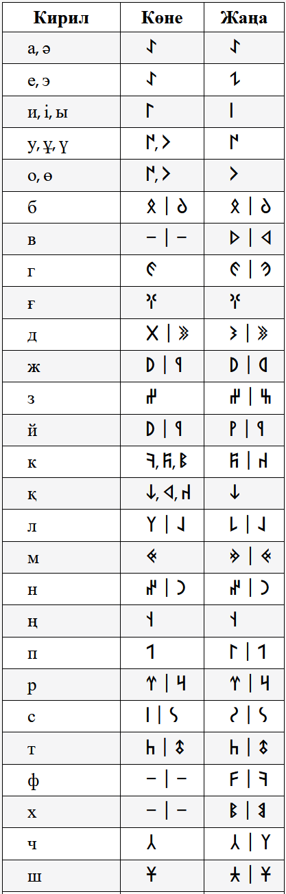
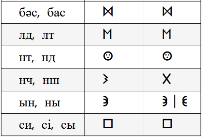
Жаңа Жазу
Таңбалар көне жазудағыдай келесі топтарға бөлінеді.
Дауысты
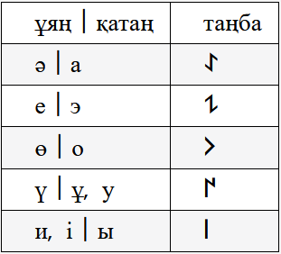
Дауыссыз Жұп
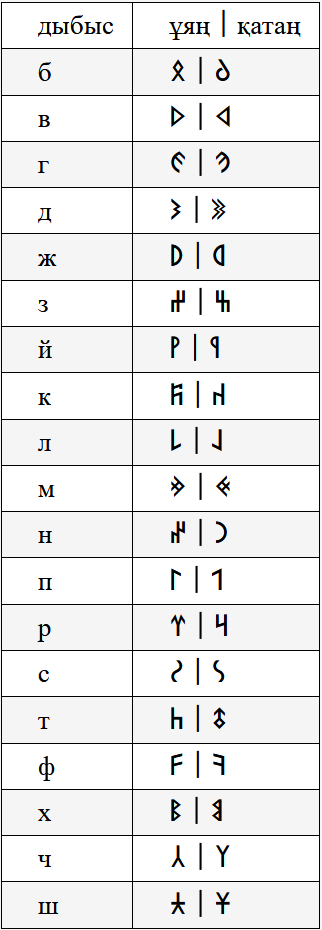
Дауыссыз Дара
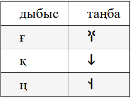
Қос Дыбыс
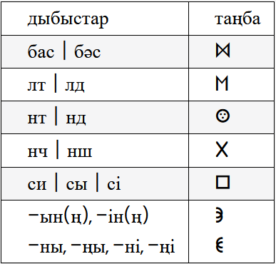
Ережелер
Таңбалардың оқылу ережелері көне жазудағыдай:
- Даустының ұяң | қатан (ә | а) оқылуы қасындағы дауыссызға байланысты.
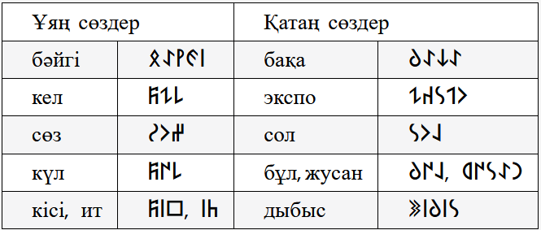
-
Кей сөздерде (әсіресе шетелдік) үндестік заңы сақтала бермейді.
Сөз қатан+ұяң, я керісінше болады.
Оны айтылуына қарай мұқият жазымыз.
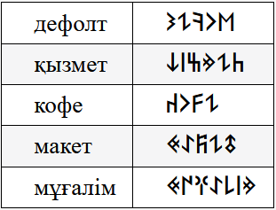
-
Қос дыбыстын оқылуы сөзге, кейде диалектіге1 де байланысты.
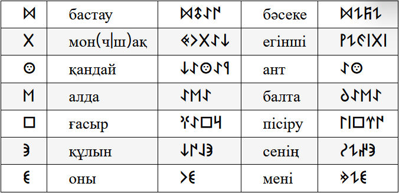
-
Есім|атау сөздін алдына ` белгісі қойылады.
Ол esc-тін астында орналасқан backtick деп аталатын белгі.
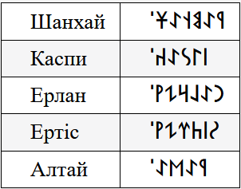
Жаттығу
Кестедегі сөздерді оқып шығыңыз.
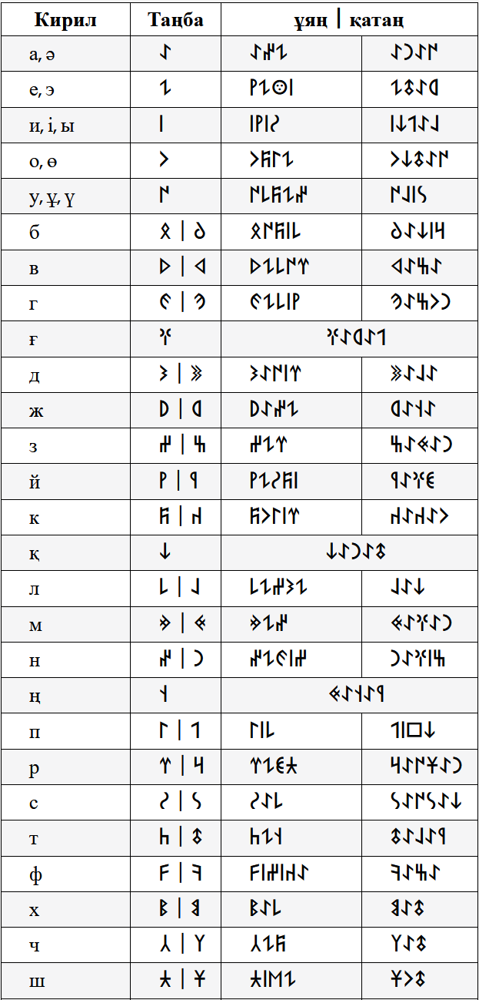
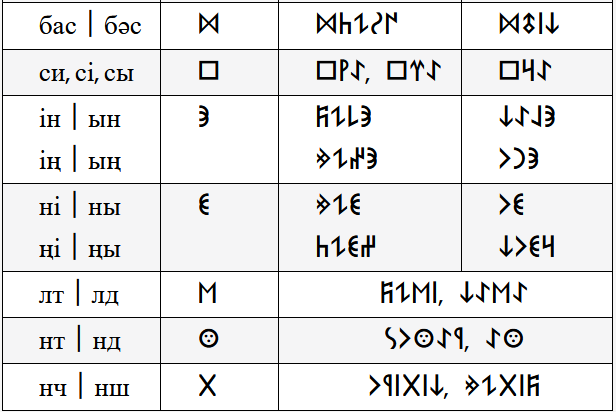